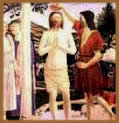

Muitos estudiosos
levantam pistas sobre um período da vida de Jesus no qual ele
teria se dedicado ao estudo das religiões esotéricas da época,
incluindo a Cabala,
a mística judaica. Mergulhe nesse fascinante universo de indagações.
Alguns evangelhos apócrifos (Tomé,
Felipe, Pistis Sophia e outros) atribuem a Jesus ensinamentos
esotéricos que se aproximam muito do gnosticismo
(corrente mística que teve sua maior expressão
no século 2 d.C.). A autenticidade das supostas palavras
do mestre é duvidosa no Pistis Sophia (Fé
e Sabedoria) - um documento tardio, do século 2
ou 3, que apresenta uma doutrina gnóstica extremamente
rebuscada. Mas parece bastante plausível em Tomé.
Certos especialistas chegam mesmo a afirmar que muitas de suas
sentenças são mais confiáveis do que as
correspondentes nos evangélicos canônicos. A imagem
de Jesus que resulta desses textos é bem mais complexa
do que a convencional.
Teria ele transmitido dois corpos complementares
de ensinamentos: um, exotérico, adaptado à
capacidade de compreensão do grande público; outro,
esotérico, destinado a um círculo mais
íntimo de discípulos?
Numerosas correntes espirituais, dentro e fora
do cristianismo, acreditam que sim. Para umas, ele foi um grande
mestre da Cabala, a tradição mística judaica.
Para outras, o portador de um conhecimento oculto que vem sendo
comunicado à humanidade desde tempos imemoriais - conhecimento
cujas origens remontam aos mais antigos iogues indianos e, antes
deles, aos xamãs pré-históricos. As duas
hipóteses não são contraditórias.
E mais algumas poderiam ser acrescentadas.
Nesse terreno movediço das suposições,
é muito arriscado fazer qualquer afirmação
taxativa. Mas, apenas como subsídio à reflexão,
é interessante rever, à luz dessas hipóteses,
algumas passagens da história de Jesus:
O batismo
Após
um período de aproximadamente 20 anos, do qual nada se
sabe, ele iniciou sua atuação pública.
Essa nova fase da vida foi precedida por um rito iniciático
adotado por várias tradições místicas.
Trata-se do batismo. A prática era utilizada pelos essênios.
Mas não apenas por eles. Comunidades esotéricas
de diferentes épocas, regiões e ambientes culturais
recorreram e ainda recorrem ao mesmo ritual. Nele, o aspirante
vivencia, de maneira simbólica, um processo de morte
e renascimento. Ao ser submerso na água, "morre"
para sua antiga existência. Emergindo dela, renasce para
uma vida nova.
A prova de
fogo do deserto
Depois do batismo, Jesus viveu ainda uma outra
experiência iniciática, jejuando durante 40 dias
no deserto da Judéia. Provas desse tipo são tão
antigas quanto o xamanismo e continuam a ser utilizadas por
várias tradições místicas. Sua função
é submeter o aspirante a uma condição de
isolamento e privação, na qual ele seja levado
a confrontar o lado sombrio de si mesmo. Nos evangelhos - especialmente
em Mateus - esse domínio obscuro da psique assume a forma
do Diabo, que assedia Jesus com três tentações:
quebrar o jejum, transformando em pães as pedras do deserto;
atirar-se do alto do Templo de Jerusalém, para que os
anjos o
amparassem; adorar o próprio Diabo, em troca do reinado
sobre a Terra. Essas três tentações poderiam
ser analisadas à exaustão. Mas basta dizer que
elas tinham todas o mesmo objetivo: desviar Jesus de sua missão,
levando-o a direcionar seus poderes para metas egoístas.
Ele as rejeitou, de maneira soberana.
O círculo
hermético
Iniciada a missão, suas ações
e palavras passaram a atrair um número cada vez maior
de pessoas. Os evangelhos distinguem três tipos de público:
a grande massa, à qual ele se dirigia nas sinagogas e
outros espaços coletivos; um contingente amplo de discípulos,
com os quais se mantinha em freqüente contato; e o grupo
mais restrito dos "doze", cujos integrantes tiveram
que abandonar seus compromissos profissionais e familiares para
segui-lo.
A narrativa de João informa que pelo menos
dois dos "doze" haviam sido antes discípulos
de João Batista, e deixaram seu mestre para aderir a
Jesus. A constituição e estrutura desse círculo
talvez fossem bem menos informais do que se supõe, obedecendo
a um modelo há muito estabelecido nas comunidades místicas.
Um exemplo típico de ensinamento destinado
à multidão é o Sermão da Montanha,
ambientado numa colina próxima à cidade de Cafarnaum.
Sentenças mais densas, encontradas no evangelho de Tomé,
mas também aqui e ali nos canônicos, poderiam conter
parte das lições esotéricas transmitidas
aos discípulos.
O texto oculto
na tabuleta fixada na cruz
Depois de o mestre ter sido julgado e condenado
à morte, o procurador romano Pôncio Pilatos escreveu
pessoalmente numa tabuleta a frase "Jesus Nazareno,
o Rei dos Judeus". Essa inscrição, redigida
em hebraico, grego e latim, foi afixada à cruz. E costuma
ser interpretada como um resumo da acusação imputada
a Jesus. Porém, à luz das especulações
de que estamos tratando, pode ter um significado bem diferente
do convencional. Nazareno parece ser o designativo
de habitante da cidade de Nazaré, onde ele teria vivido
parte de sua existência. Mas poderia se referir também
ao status de nazir ou nazireu, indivíduo
inteiramente consagrado a Deus, que, entre outras obrigações
rituais, devia se abster de cortar os cabelos.
Sansão, um personagem semi-lendário
do Antigo Testamento, era nazir e teria perdido temporariamente
os poderes sobrenaturais quando seus cabelos foram cortados.
Também na Índia, muitos iogues, devotos de Shiva,
não cortam os cabelos e a barba, porque acreditam que
os pêlos funcionam como antenas, conectando o corpo físico
do homem aos seus corpos sutis. Haveria alguma ligação
entre a mística judaica e o shivaísmo indiano?
Vários indícios apontam nesse sentido. Mas o desenvolvimento
do tema é extenso demais para ser exposto aqui.
Outra palavra da inscrição de Pilatos
que costuma ser reinterpretada pelas escolas místicas
é o termo rei. Ele não se referiria a
um cargo político. Mas ao título que, nos círculos
esotéricos, era dado ao indivíduo que iniciava
os demais adeptos no conhecimento dos mistérios. O filósofo
neoplatônico Porfírio (233-305) foi chamado
de Malchos, que significa rei em idioma siríaco.
E, com essa conotação de mestre iniciático,
a palavra foi amplamente utilizada pelos sufis, integrantes
de uma tradição mística que teve sua maior
expressão no mundo muçulmano.
Os partidos
e as seitas que existiam na Galiléia na época
de Jesus
Jesus era um judeu, dirigindo-se a interlocutores
judeus. E, como tal, contracenou com os diversos grupos político-religiosos
que se movimentavam em Israel no seu tempo. Em vários
momentos de sua atuação pública, ele divergiu
desses partidos e seitas, e criticou duramente seus adeptos.
Suas palavras não eram nada suaves nessas ocasiões:
"Ai de vós, escribas e fariseus, hipócritas!
Sois semelhantes a sepulcros caiados, que por fora parecem bonitos,
mas por dentro estão cheios de ossos de mortos e de toda
podridão". Quem eram esses indivíduos
que despertavam a indignação do mestre? A que
segmentos sociais estavam ligados? Quais suas principais idéias
em matéria de política e religião?
Saduceus
Integrantes de um partido constituído
por grandes proprietários de terras (anciãos)
e membros da elite sacerdotal. O famoso historiador judeu Flávio
Josefo (35 d.C. - 111 d.C.) escreveu que os saduceus representavam
o poder, a nobreza e a riqueza. Conciliadores em relação
ao domínio romano, eles controlavam o Sinédrio
(o senado de Israel) e o Templo de Jerusalém. Negavam
a imortalidade da alma, rejeitavam o Talmud (conjunto
de opiniões e comentários dos antigos rabinos)
e aceitavam apenas o que estava escrito na Torá
(as Sagradas Escrituras judaicas, constituídas pelos
cinco primeiros livros da Bíblia: Gênesis,
Êxodo, Levítico, Números e Deuteronômio),
cuja redação era atribuída a Moisés.
Mais do que qualquer outro grupo, foram os saduceus os principais
responsáveis pela condenação de Jesus (leia
o artigo "A morte,
os presságios e a ressurreição").
Doutores da
Lei (Escribas)
Indivíduos que não estavam ligados
a um segmento social específico, nem constituíam
uma seita ou partido, na acepção estrita das palavras,
porém desfrutavam de enorme autoridade, como intérpretes
abalizados das Sagradas Escrituras. Homens de grande erudição,
eram consultados em assuntos polêmicos e influenciavam
as decisões do Sinédrio, onde estavam representados
- por isso, tiveram também sua parte na condenação
de Jesus. Ao contrário dos saduceus, cuja atividade religiosa
se exercia somente no Templo de Jerusalém, os doutores
atuavam também nas sinagogas e escolas rabínicas.
Reverenciavam mais do que ninguém a Torá, mas
não se prendiam a uma leitura literal do texto sagrado,
reconhecendo nele toda uma dimensão esotérica.
Muitos doutores pertenciam ao grupo dos fariseus.
Fariseus
Integrantes de um movimento com ramificações
em todas as camadas sociais, principalmente nas classes dos
artesãos e pequenos comerciantes. Muito religiosos e
extremamente formalistas, os fariseus se separavam do resto
da comunidade judaica pelo cumprimento ultraminucioso de todas
as regras de pureza prescritas na Torá, em especial no
livro do Levítico. Daí seu nome, fariseus, que
deriva da palavra hebraica perishut (separação).
Eram ativos nas sinagogas e, em várias ocasiões,
foram admoestados por Jesus, que os criticava por se apegarem
aos detalhes epidérmicos da Torá, enquanto negligenciavam
seu conteúdo profundo. Dirigindo-se a eles e aos doutores,
o mestre os chamou de "condutores cegos, que coais
o mosquito e tragais o camelo!" Apesar disso, a doutrina
farisaica exerceu forte influência sobre o futuro pensamento
cristão, legando-lhe, principalmente, a crença
na imortalidade da alma e na ressurreição do corpo.
Em política, os fariseus eram nacionalistas, e aguardavam
a vinda do Messias, que deveria libertar Israel da dominação
romana.
Zelotas
Dissidentes radicais da seita dos fariseus, pretendiam
expulsar pelas armas os dominadores pagãos, e cometiam
atentados terroristas contra os representantes do Império.
Por isso, eram cruelmente perseguidos pelo poder romano. A base
social do partido dos Zelotas era formada pelo pequeno campesinato
e outros segmentos pobres da sociedade. Sua doutrina era um
misto de religiosidade extremada e ultranacionalismo político.
Entre os 12 discípulos mais íntimos de Jesus,
havia pelo menos dois zelotas: Simão, o Zelota (não
confundir com o outro Simão, que o mestre denominou Pedro),
e Judas Iscariotes, aquele que o traiu. O termo Iscariotes,
acrescentado ao nome de Judas, tanto pode significar que ele
fosse originário da cidade de Kariot, foco da
rebelião zelota, como derivar da expressão aramaica
ish kariot (aquele que porta um punhal), alusão
ao fato de os membros dessa seita andarem armados.
Os zelotas parecem ter depositado grandes esperanças
na liderança política de Jesus. Porém a
amplitude, a profundidade e o longo alcance da mensagem do mestre
se chocaram com o caráter restrito, superficial e imediatista
do projeto revolucionário zelota. Isso talvez explique
a traição de Judas.
Essênios
Puritanos que viviam em comunidades ultrafechadas,
como a que se desenvolveu na região de Qumran, às
margens do Mar Morto. Muitos essênios eram sacerdotes
dissidentes do clero de Jerusalém. Para eles, nem mesmo
os fariseus e os zelotas eram suficientemente rigorosos no cumprimento
da Lei judaica. Sua confraria - acreditavam - era o único
remanescente puro de Israel. Opunham-se à propriedade
privada e ao comércio, valorizavam o trabalho na lavoura
e levavam uma vida comunal extremamente austera. Praticavam
o celibato ou se casavam somente para perpetuar a espécie.
Combatiam intransigentemente tanto os romanos quanto o poder
concentrado no Templo de Jerusalém, opondo-se ao sacrifício
de animais. E aguardavam a vinda do Messias, que deveria liderar
uma guerra santa para eliminar os pecadores e instaurar o reino
dos justos.
Os essênios cultivavam uma doutrina mística
de tipo gnóstico. Seus aspirantes deviam passar por um
período de iniciação, que durava três
anos e culminava no ritual do batismo. Pesquisas arqueológicas
recentes levaram à descoberta de que havia em Jerusalém
um bairro essênio, contíguo ao bairro cristão.
Certamente ocorreu uma troca de influências entre as duas
comunidades. Mas a especulação de que Jesus tenha
pertencido a essa seita é totalmente rechaçada
pelos estudiosos contemporâneos. Um essênio jamais
se sentaria à mesa de um cobrador de impostos ou perdoaria
uma mulher adúltera, como fez Jesus. Apegados aos preceitos
de pureza e ao seu próprio orgulho, os essênios
se afastavam de um mundo supostamente corrompido para não
se contaminarem. Jesus, ao contrário, transgredia deliberadamente
essas mesmas regras. E mergulhava no mundo para transformá-lo.